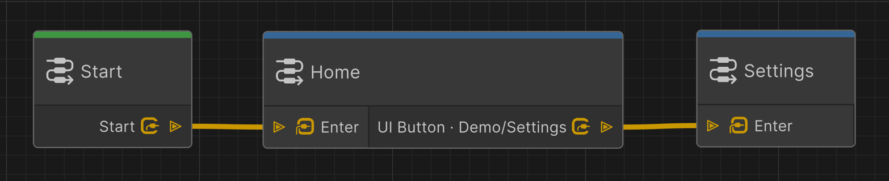

Getting started
This walkthrough builds a small Home → Settings flow. The important order is: create the UI, register its addresses, assign those addresses in UI Builder, connect the graph, and then enter Play Mode.
1. Build the UI hierarchy
Open your UXML document in UI Builder and create two screen roots:
- Use a
NavElementfor the Home screen. - Use another
NavElementfor the Settings screen. - Place a
NavButtonlabeled Settings inside Home.
Use NavButton, not the standard UI Toolkit Button, for a control that should trigger a graph UI Button output. A regular Button does not publish a navigation address.
The two NavElement screens can be siblings under the same panel root. NavElement uses absolute positioning by default, so the graph can show one and hide the other.
2. Register the addresses in Key Catalog
Open Tools > UI Navigation > Key Catalog and add these entries:
| Catalog tab | Category | Key | Used by |
|---|---|---|---|
| View | Demo |
Home |
Home NavElement and graph View commands |
| View | Demo |
Settings |
Settings NavElement and graph View commands |
| Button | Demo |
OpenSettings |
Home NavButton and graph UI Button output |
The View and Button catalogs are separate. The same spelling in the wrong tab will not appear in the matching picker.
3. Assign the catalog entries in UI Builder
Select each element in UI Builder and use its catalog picker. Each picker writes both Category and Key:
- On Home, choose
Demo / Homefrom the View picker. - On Settings, choose
Demo / Settingsfrom the View picker. - On the Home
NavButton, chooseDemo / OpenSettingsfrom the Signal picker. This picker reads the Button catalog despite its label. - Save the UXML document.

The resulting UXML is equivalent to:
<ui:UXML xmlns:ui="UnityEngine.UIElements"
xmlns:nav="NKStudio.UITKNavigation.Elements">
<nav:NavElement name="home"
view-category="Demo" view-key="Home">
<nav:NavButton name="open-settings" text="Settings"
signal-category="Demo" signal-key="OpenSettings" />
</nav:NavElement>
<nav:NavElement name="settings"
view-category="Demo" view-key="Settings" />
</ui:UXML>
Although the UXML attribute is named signal-key, NavButton uses the Button catalog and must match a graph UI Button output. The separate Signal catalog is for signals raised from code with UINavigationEvents.RequestSignal(...).
4. Connect the Navigation Graph
- In the Project window, choose Assets > Create > UI Navigation > UI Navigation Graph.
- Open the
.uinavgraphasset. A new graph already containsStart → Home. - Select the Home UI node. Under On Enter UI, Show
Demo/Homeand HideDemo/Settings. - Choose + Add Output > UIButton on Home, then select
Demo/OpenSettingsfrom the Button catalog. The created port is labeledUI Button · Demo/OpenSettings. - Create a second UI node and name it Settings.
- Under Settings On Enter UI, Show
Demo/Settingsand HideDemo/Home. - Connect Home's
UI Button · Demo/OpenSettingsoutput to the Settings Enter port. - Enable Use Back on Settings if Back should return to Home.
- Save the graph. Saving validates the Graph Toolkit model and recompiles the runtime asset.

5. Connect the runtime
- Make sure the UXML is instantiated on a Player-context panel through
PanelRenderer,UIDocument, or your panel integration. - Add one
UINavigatorBehaviourto an active GameObject. - Assign the
.uinavgraphasset to its Navigation Graph field. - Optional: add
UIBackInputRouterto enable Escape, Backspace, and mouse Back/Forward navigation.
Only one UINavigatorBehaviour can be active. It does not need to be on the same GameObject as PanelRenderer, although keeping the UI components together is convenient.
6. Play the flow
Enter Play Mode. Home appears first. Clicking Settings publishes Demo/OpenSettings, the active Home node matches its UI Button output, and the graph transitions to Settings. If Settings has Use Back enabled and a UIBackInputRouter is present, press Escape or the mouse Back button to return Home.
Tip
If a picker does not contain an address, reopen Tools > UI Navigation > Key Catalog and verify the selected View/Button tab. Scan Project can import valid addresses that already exist in UXML or graphs.